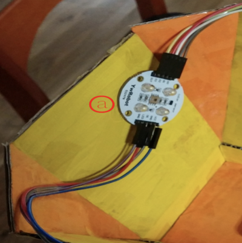
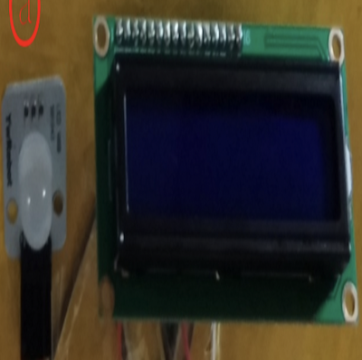

구현 기능
|  |
박스 인식 기능 박스를 센서에 갖다 대면 색깔을 인식합니다. |
|  |
인식 정보 출력 기능 박스를 센서에 갖다 댔을 때 인식된 정보를 화면에 출력합니다. |

|
카트 조종 기능 리모콘에 있는 방향 버튼으로 카트를 조종할 수 있습니다. |
배경과 목적
컴퓨터시스템입문 수업 시간에 Arduino로 작품을 만드는 과제가 있었습니다. 최대한 창의적인 작품을 만들기 위해 제작하게 되었습니다.
컴퓨터시스템입문 수업 시간에 Arduino로 작품을 만드는 과제가 있었습니다. 최대한 창의적인 작품을 만들기 위해 제작하게 되었습니다.
배운 점
- RGB LED, 색깔 인식 센서, 자동차 모듈을 활용하는 법을 알게 되었습니다.
진행 절차
- Arduino 프로그래밍을 하기 전에 박스, 테이프, 물감 등을 이용해 장난감 미니 카트의 모형만 구현하였습니다.
- 프로젝트에 필요한 부품들을 모두 구입하였고, 해당 부품들을 사용하는 예제를 구글에서 찾아서 실행하였습니다.
- 지금까지 조사한 예제 프로그램을 적절히 수정해서 하나로 합쳤습니다.
- 이렇게 해서 원하는 프로그램을 구현할 수 있었습니다.
담당한 역할 및 가장 노력한 점
프로그램 구현 총괄 담당, Uno(Arduino 본체) 2개끼리 통신
프로그램 구현 총괄 담당, Uno(Arduino 본체) 2개끼리 통신
전체 구조

사용 기술
Arduino
Arduino
개발 환경
Arduino IDE
Arduino IDE
부연 설명
- 전공 과목 ’컴퓨터시스템설계’ 기말 과제로 제출하였습니다.
- 소스 코드